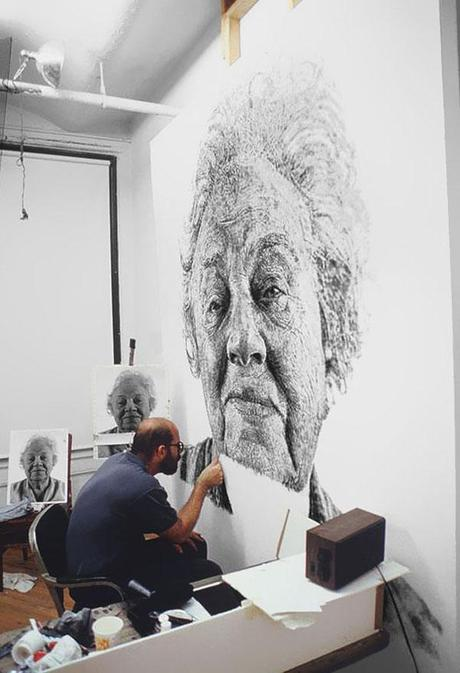

Top 10 Vegan Yoga Retreats Worldwide

A link to reset your password has been sent to your email
Sign upMenu
Hello there. Glad to have you!
Log in Sign upLanguage
English - ENCurrency
€ EuroFOR INSTRUCTORS, STUDIOS, & BUSINESSES
Become a partner
Start promoting your trips today!
Need help?
Contact support
If you need help for any reason, we would be glad to assist you!
Currency
Popular currencies
AUD - Australian Dollar CAD - Canadian Dollar EUR - Euro GBP - British Pound USD - United States DollarAll currencies A - Z
BRL - Brazilian Real CHF - Swiss Franc CNY - Chinese Renminbi Yuan CZK - Czech Koruna DKK - Danish Krone HKD - Hong Kong Dollar IDR - Indonesian Rupiah ILS - Israeli New Sheqel INR - Indian Rupee JPY - Japanese Yen KRW - South Korean Won MXN - Mexican Peso MYR - Malaysian Ringgit NOK - Norwegian Krone NZD - New Zealand Dollar PHP - Philippine Peso PLN - Polish Złoty RUB - Russian Ruble SEK - Swedish Krona SGD - Singapore Dollar THB - Thai Baht TRY - Turkish Lira ZAR - South Africa, RandLanguage
English - EN Deutsch - DE Français - FR Nederlands - NL Español - ESLanguage/Currency
Language
English - ENCurrency
€ Euro ×Log in to your account
Are you a partner? Please log in here
OR
Continue with GoogleDon t have an account? Sign up
Partner login ×Create an account
OR
Continue with GoogleAlready have an account? Log in
By proceeding, you confirm that you accept the Tripaneer terms and privacy policy.
Partner signupThank you for signing up
Confirm your email address
We have sent you an email to validate your email address. Follow the link provided in that email to complete your registration.
Didn t receive an email? Resend
×Reset password
Back to Login
Password reset
Check your email for the confirmation email. It will have a link to reset your password.
Didn t receive an email? Resend
Yoga Retreats (5,424) Vegan Yoga Retreats (421)Vegan Yoga Retreats
Detox and refresh with a vegan yoga retreat
Vegan Yoga Retreats Reset all We re sorry. We cannot find any matches for your search term. Duration & arrivaloptional
Select duration or date
Duration
2 days From 3 to 7 days From 1 to 2 weeks More than 2 weeksArrival month
2021 March 2021 April 2021 May 2021 June 2021 July 2021 August 2021 September 2021 October 2021 November 2021 December 2022 JanuarySelect a specific date
Exact dates 1 day before/after 2 days before/after 3 days before/after 7 days before/after 14 days before/afterBook with confidence - we offer flexible booking conditions during COVID-19. Learn more
Filters
Reset all Safe travel Private retreats (35) Clean & Safe (236) Travel / Online Travel experiences (421) Destinations We couldn t find any matches for your search yet. Please try selecting a country first. Asia & Oceania Anywhere in Asia & Oceania Thailand (64) India (47) Indonesia (36) Sri Lanka (12) Nepal (12) Australia (5) Cambodia (3) China (2) French Polynesia (1) Hong Kong (1) Malaysia (1) New Zealand (1) Vietnam (1) Europe Anywhere in Europe Spain (53) France (44) Portugal (18) Greece (13) Germany (8) United Kingdom (8) Norway (7) Italy (6) Netherlands (6) Austria (5) Belgium (4) Croatia (3) Switzerland (3) Iceland (2) Montenegro (2) Cyprus (1) Hungary (1) Ireland (1) Latvia (1) Romania (1) Slovenia (1) Sweden (1) Africa & the Middle East Anywhere in Africa & the Middle East Morocco (3) Turkey (1) The Americas & Caribbean Anywhere in The Americas & Caribbean Costa Rica (10) USA (10) Mexico (6) Colombia (4) Peru (4) Nicaragua (3) Brazil (2) Ecuador (2) Guatemala (1) Arrival date 2021 March (227) 2021 April (228) 2021 May (221) 2021 June (210) 2021 July (196) 2021 August (189) 2021 September (204) 2021 October (197) 2021 November (150) 2021 December (141) 2022 January (81) Show more Select a specific date Exact dates 1 day before/after 2 days before/after 3 days before/after 7 days before/after 14 days before/after Duration 2 days (6) From 3 to 7 days (235) From 1 to 2 weeks (157) More than 2 weeks (80) Show more Airport Transfer Airport transfer included (91) Airport transfer available (139) Categories Reset Budget or luxury Budget Retreats (935) Luxury Holidays (393) All-Inclusive Yoga Retreats (190) Skill Level Level: Advanced (1758) Level: Beginner (2872) Level: Intermediate (2758) Teacher Training Yoga Teacher Training (994) 100-Hour Yoga Teacher Training (183) 200-Hour Yoga Teacher Training (645) 300-Hour Yoga Teacher Training (143) 500-Hour Yoga Teacher Training (54) Kids Yoga Teacher Training (11) Prenatal Yoga Teacher Training (14) SUP Yoga Teacher Training (3) Short Yoga Teacher Training (134) Yoga Nidra Teacher Training (21) Sporty & Outdoor Activities Adventure Yoga Retreats (181) SUP Yoga Retreats (70) Yoga and Cycling (50) Yoga and Diving (30) Yoga and Fitness (155) Yoga and Hiking (592) Yoga and Horse Riding (44) Yoga and Kayaking (23) Yoga and Kitesurfing (20) Yoga and Martial Arts (79) Yoga and Pilates (122) Yoga and Running (18) Yoga and Sailing (54) Yoga and Skiing (19) Yoga and Surfing (447) Yoga and Walking (424) Spirituality & Chanting Yoga Meditation Retreats (3130) Ayahuasca Yoga Retreats (20) Christian Yoga Retreats (2) Kirtan Yoga Retreats (208) Shamanic Healing Yoga (63) Spiritual Yoga Retreats (1658) Yoga Ashrams (223) Yoga and Chanting (816) Yoga and Silent Retreats (29) Certain People with You Men Only Yoga Retreats (14) Nude / Naked Yoga Retreats (5) Popular for Couples (85) Popular for Families (58) Popular for Gay (11) Popular for Lesbians (1) Popular for Singles (68) Popular for Teen (1) Popular for solo (208) Prenatal / Pregnant Yoga (13) Private Yoga Retreats (102) Women Only Yoga Retreats (143) Yoga Retreats for Women of Color (2) Yoga for Seniors (11) Cultural Activities Yoga and Astrology (10) Yoga and Cooking (343) Yoga and Dancing (195) Yoga and Language (39) Yoga and Painting (22) Yoga and Photography (8) Yoga and Qigong (87) Yoga and Tai Chi (75) Yoga and Writing (71) Special Time of the Year Short Breaks and Weekends (959) Christmas Yoga Retreats (1596) Easter Yoga Retreats (1110) Full Moon Yoga Retreats (18) New Year Yoga Retreats (1604) Thanksgiving Yoga Retreats (2) Nature Location Mountain Yoga Retreats (198) Retreats near the Sea or Beach (1584) Yoga Retreats in Nature (615) Yoga and Eco Retreats (221) Health & Wellness Aqua Healing and Yoga (22) Ayurveda Retreats (369) Wellness Retreats (82) Yoga Detox Retreats (442) Yoga Health Farms (10) Yoga Health Retreats (718) Yoga Therapy Retreats (444) Yoga Wellness Retreats (1110) Yoga and Acupuncture (19) Yoga and Digital Detox Retreats (32) Yoga and Life Coaching (132) Yoga and Pranayama (1691) Yoga and Regression Therapy (9) Yoga and Reiki (162) Yoga and Shiatsu (10) Yoga and Weight Loss (36) Pampering Yoga Spa Retreats (370) Yoga and Aromatherapy (35) Yoga and Massage (1004) Specific Diet Vegan Yoga Retreats (421) Vegetarian Yoga Retreats (2048) Yoga and Raw Food Retreats (83) Holiday Fun Yoga Camps (42) Yoga Cruises (23) Yoga Festivals (7) Yoga Holidays (2035) Yoga Hotels and Resorts (647) Yoga Tours (231) Yoga and Wine (49) Styles Sweat & Flow Ashtanga Yoga (71) Bikram / Hot Yoga (1) Vinyasa Yoga (185) AcroYoga (10) Forrest Yoga (3) Jivamukti Yoga (2) Power Yoga (17) Tibetan Yoga (2) Zen Yoga (6) Mindfulness & Meditation Hatha Yoga (309) Iyengar Yoga (17) Kundalini Yoga (51) Tantra Yoga (19) Yin Yoga (155) Alignment Yoga (11) Chakra Yoga (14) Critical Alignment Yoga (3) Dru Yoga (1) Ganja yoga (1) Integral yoga (10) Japa Yoga (4) Kashmir yoga (1) Kripalu Yoga (1) Laughter Yoga (4) Laya Yoga (1) Nada Yoga (1) Nidra Yoga (83) Para Yoga (1) Partner Yoga (9) Restorative Yoga (88) Satyananda Yoga (4) Sivananda Yoga (14) Somatic Yoga (1) Thai yoga (5) Therapeutic Yoga (16) Tibetan Yoga (2) Transformational Yoga (9) Viniyoga (2) Vipassana Yoga (9) Zen Yoga (6) Restore & Revitalize Hatha Yoga (309) Iyengar Yoga (17) Kundalini Yoga (51) Tantra Yoga (19) Yin Yoga (155) Aerial Yoga (8) Alignment Yoga (11) Chakra Yoga (14) Critical Alignment Yoga (3) Dru Yoga (1) Integral yoga (10) Japa Yoga (4) Jivamukti Yoga (2) Kashmir yoga (1) Kripalu Yoga (1) Laughter Yoga (4) Laya Yoga (1) Nada Yoga (1) Nidra Yoga (83) Para Yoga (1) Restorative Yoga (88) Satyananda Yoga (4) Sivananda Yoga (14) Somatic Yoga (1) Thai yoga (5) Therapeutic Yoga (16) Transformational Yoga (9) Viniyoga (2) Vipassana Yoga (9) Fitness & Strength Anusara Yoga (4) Ashtanga Yoga (71) Bikram / Hot Yoga (1) Vinyasa Yoga (185) AcroYoga (10) Aerial Yoga (8) Forrest Yoga (3) Partner Yoga (9) Power Yoga (17) Price per trip From € 0 to € 100 (4) From € 100 to € 300 (51) From € 300 to € 900 (223) More than € 900 (174) Show moreShowing 421 results
Sort by Recommended Popularity Duration short to long Duration long to short Price low to high Price high to low Price per day low to high Price per day high to low Review score Clean & Safe This organizer is taking steps to ensure your experience is safe, during the COVID-19 pandemic Login to save to your favorites Thailand 14 interested 4.75 (412) 8 Day Wellness Retreat with Yoga, Meditation, and More in Koh Phangan Instructed in English All meals included Vegetarian friendly 1 person 8 days • Available all year from € 192 Clean & Safe This organizer is taking steps to ensure your experience is safe, during the COVID-19 pandemic Login to save to your favorites Thailand 1 interested 4.75 (412) 4 Day Wellness Retreat with Yoga, Meditation, and More in Ko Pha Ngan, Surat Thani Instructed in English All meals included Vegetarian friendly 1 person 4 days • Available all year from € 82 Clean & Safe This organizer is taking steps to ensure your experience is safe, during the COVID-19 pandemic Login to save to your favorites Montenegro 15 interested 4.7 (102) 8 Day Relax and Restore Yoga Retreat in Montenegro Airport transfer included Instructed in English Vegetarian friendly 1 person 8 days • Multiple starting dates from € 537 Login to save to your favorites Belgium 6 interested 4.55 (64) 4 Day Akasha Yoga and Meditation Retreat in Heks, Limburg Instructed in English All meals included Vegetarian friendly 1 person 4 days • Starts on: March 4, 2021 from € 375 Clean & Safe This organizer is taking steps to ensure your experience is safe, during the COVID-19 pandemic Login to save to your favorites Thailand 1 interested 4.75 (412) 12 Day Yoga and Meditation Holiday in Ko Pha Ngan, Surat Thani Instructed in English All meals included Vegetarian friendly 1 person 12 days • Available all year from € 302 Clean & Safe This organizer is taking steps to ensure your experience is safe, during the COVID-19 pandemic Login to save to your favorites Thailand 4.75 (412) 22 Day Wellness Retreat with Yoga, Meditation, and More in Ko Pha Ngan, Surat Thani Instructed in English All meals included Vegetarian friendly 1 person 22 days • Available all year from € 577 Clean & Safe This organizer is taking steps to ensure your experience is safe, during the COVID-19 pandemic Login to save to your favorites Mexico 12 interested 4.55 (12) 4 Day Yoga and Snorkeling Holiday in Cozumel Instructed in English Vegetarian friendly 1 person 4 days • Available all year from € 378 Clean & Safe This organizer is taking steps to ensure your experience is safe, during the COVID-19 pandemic Login to save to your favorites Thailand 3.95 (64) 6 Day Ayurveda Treatments, Reiki Healing Sessions, Meditation, and Yoga Retreat in Phuket Airport transfer available Instructed in English All meals included Vegetarian friendly 1 person 6 days • Multiple starting dates from € 1,263 Clean & Safe This organizer is taking steps to ensure your experience is safe, during the COVID-19 pandemic Login to save to your favorites Mexico 19 interested 4.55 (24) 8 Day All-inclusive Yoga, Massage, Ayurveda, Meditation, Breathwork, Hiking, and Snorkeling Retreat Airport transfer included Instructed in English Vegetarian friendly 1 person 8 days • Multiple starting dates from € 823 Clean & Safe This organizer is taking steps to ensure your experience is safe, during the COVID-19 pandemic Login to save to your favorites Thailand 4.75 (412) 8 Day Walking Meditation Retreat in Ko Pha Ngan, Thailand Instructed in English All meals included Vegetarian friendly 1 person 8 days • Available all year from € 192 Clean & Safe This organizer is taking steps to ensure your experience is safe, during the COVID-19 pandemic Login to save to your favorites Indonesia 3 interested 4.35 (113) 4 Day Yoga and Meditation Retreat in Nusa Lembongan, Bali Airport transfer included Instructed in English Vegetarian friendly 1 person 4 days • Available all year from € 246 Clean & Safe This organizer is taking steps to ensure your experience is safe, during the COVID-19 pandemic Login to save to your favorites Thailand 3.95 (64) 4 Day Vitalize Program and Yoga Holiday in Phuket Airport transfer available Instructed in English All meals included Vegetarian friendly 1 person 4 days • Available all year from € 364 1 2 3 4 5 6 7 8 9 10 11-20 Next pageDetox and refresh with a vegan yoga retreat
Converting to veganism is not only good for your health, but also for the earth. Over the years, more and more people have been joining this healthy lifestyle. Whether you re a longtime vegan or someone looking to try it out, a vegan yoga retreat will benefit you in more ways than one. On a vegan yoga retreat, you are not only getting the nutrition your body deserves, you re also giving your body the exercise it needs. So, combine rejuvenating yoga sessions and delicious vegan food on your next holiday! We bet it will be worth it!
Vegan Yoga Retreats in Surat Thani Province Vegan Yoga Retreats in Koh Phangan Vegan Yoga Retreats in France Vegan Yoga Retreats in Alpes-de-Haute-Provence Vegan Yoga Retreats in Southeastern France Vegan Yoga Retreats in Saint-Martin-de-Brômes Vegan Yoga Retreats in Provence-Alpes-Cote d AzurTravel guides and inspiration from our blog
Octavia DrughiWhy Should You Go on a Yoga Retreat in Nature?
Yoga has always encouraged us to reconnect with ourselves and nature. But our busy urban lives often compel us to attend classes in indoor studios.
Octavia DrughiA Guide to Yoga Retreats in the COVID-19 Era
There’s no denying that 2020 has been a rocky road, and the need to disconnect and focus on our wellbeing is now greater than ever.
Alberto G. GüitrónYoga Retreats in Costa Rica
From lovely beaches to volcanic mountains and tropical rainforests, Costa Rica offers a wide variety of magnificent landscapes for a great yoga vacation.
Alberto G. GüitrónYoga Retreats in Mexico
From colonial cities to pristine beaches, magical islands, bohemian towns, renowned surf spots, misty mountains and astonishing reefs, Mexico seems to have it all for a great vacation.
See all blog articlesTravelers love us, and the feeling is mutual
Over 130k travelers like you have chosen Tripaneer so far. Hear what they have to say about us!
Over 150,000 trips enjoyed
through Tripaneer
93% of our customers
recommend booking with us
42,000+ verified reviews
4.5 star average organizer score
“I really like the food, room, pool, activity, teachers, staffs and Ariel! ” Sachiko U. Indonesia See Indonesia trips “It was nice to have the consistency and accountability! ” Ardena G. India See India trips “Thank you Aday for a magical experience!” Georgiana T. Spain See Spain tripsStill searching for that perfect trip?
Get weekly inspiration delivered right to your inbox!
We respect your privacy. We will not publish or share your email address in any way.
Made with by Who are we?We’re the world’s leading marketplace to explore and book unforgettable travel experiences. We offer any type of holiday you can imagine including mindful yoga retreats, adventurous safaris, epic surf camps, and more.
Why choose us?We love to travel and we want to share our excitement with you. We’re passionate about connecting you with local organizers to enrich your life with unforgettable trips.
Connect with us facebook twitter youtube instagram Copyright © 2021 Tripaneer.
All rights reserved.
Tripaneer
Contact Us About us Become a Partner Join the Affiliate Program Newsletter Sign Up Site Map Careers Customer Care Terms and PrivacyOur Other Themes
BookMartialArts BookCulinaryVacations BookCyclingHolidays BookSurfCamps BookHorseRidingHolidays BookMeditationRetreats BookYogaTeacherTraining BookDetoxRetreats BookAllSafaris BookMotorcycleTours BookRanchVacationsRecent Blog Articles
Why Should You Go on a Yoga Retreat in Nature? A Guide to Yoga Retreats in the COVID-19 Era Yoga Retreats in Costa Rica Yoga Retreats in Mexico How Yoga Can Boost Your Mental HealthAlmost there!
Please go to your inbox and click the confirmation link we just emailed you.
Sign up for our newsletter
Don t miss our special promotions, exclusive offers, new destinations and inspirational stories!
We respect your privacy. We will not publish or share your email address in any way.
Don t miss out, join our mailing list and get updates & special offers!
Sign up for our newsletter Served by www:8000Logging out
of Tripaneer websites